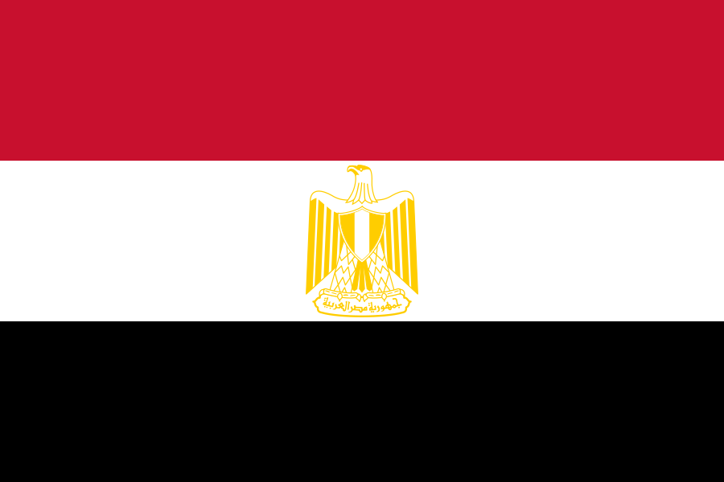
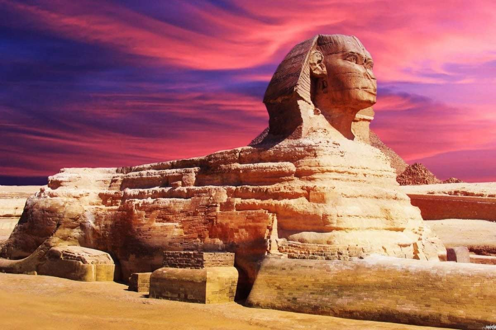
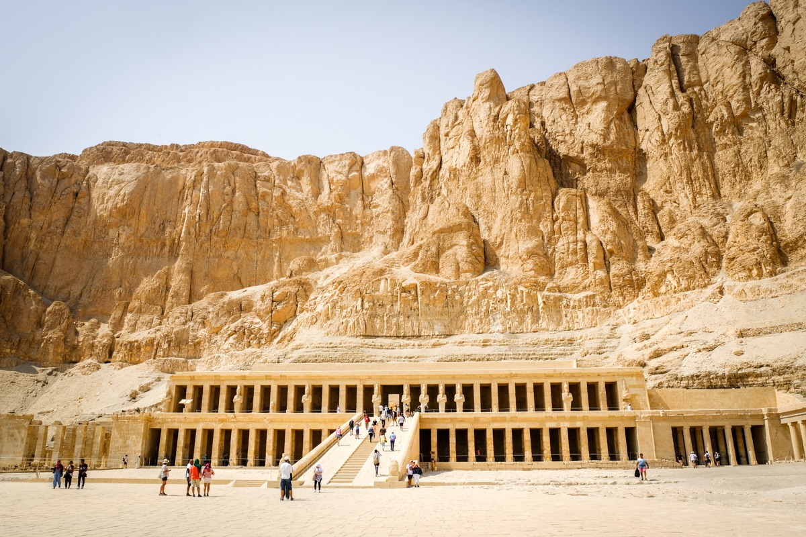
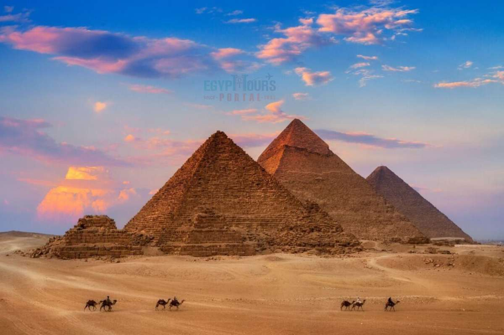
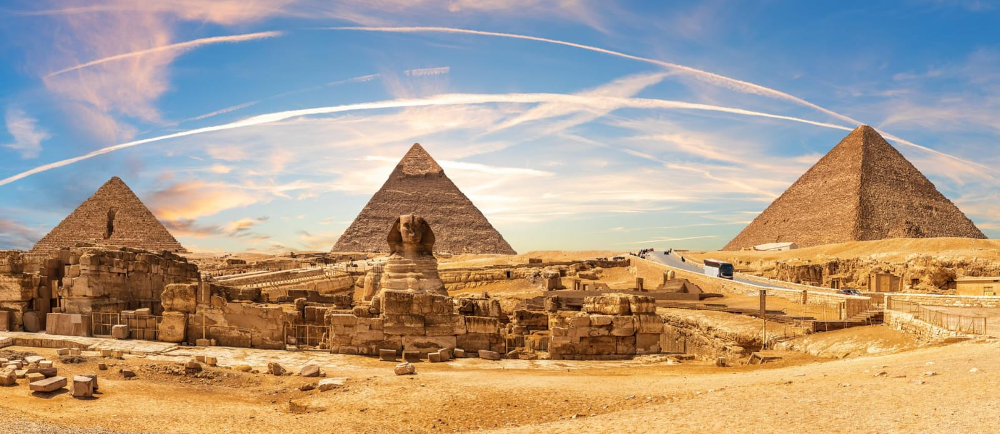
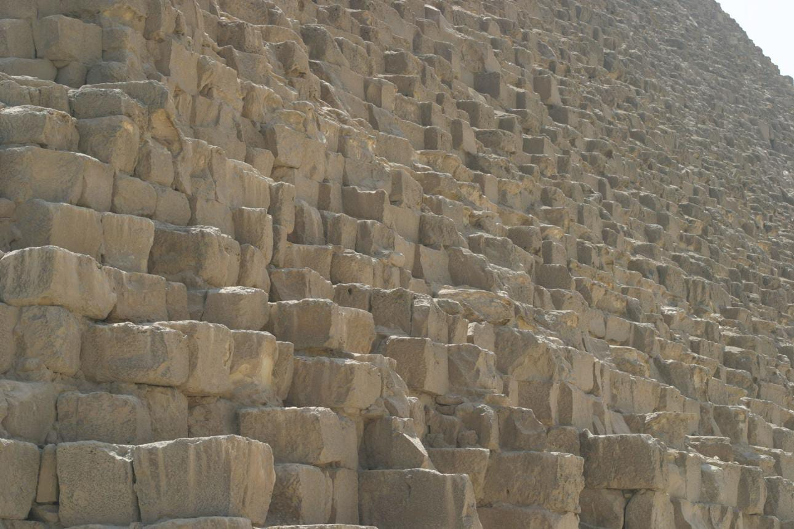
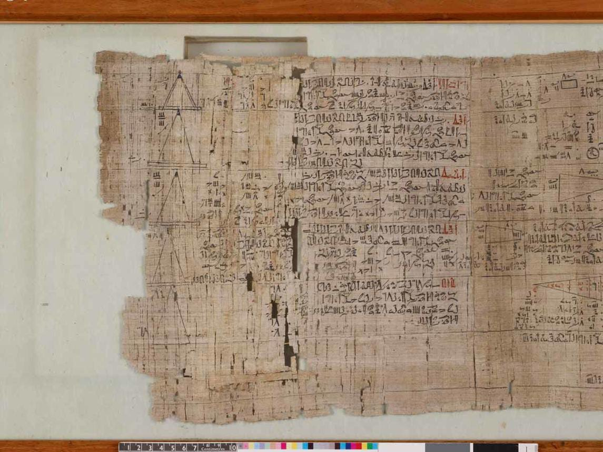
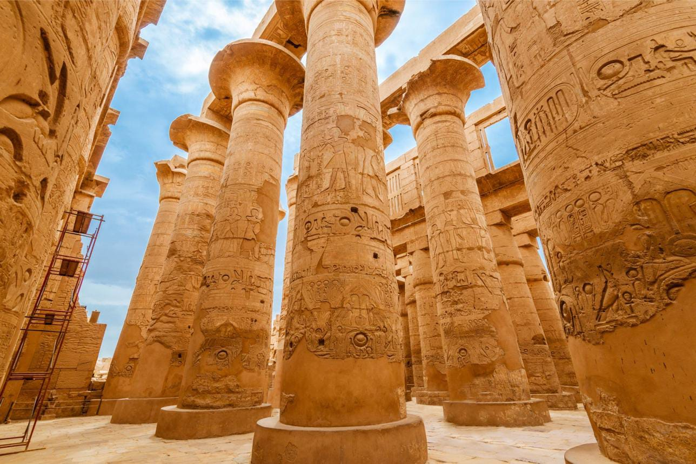

Egito
Monumentos Históricos
O Egito é um país conhecido por sua história milenar e por seus impressionantes monumentos, construídos principalmente durante o período do Antigo Egito. Essas construções mostram a importância da religião, dos faraós e da cultura egípcia para aquela sociedade.
Monumentos do Egito

Grande Esfinge de Gizé
A Grande Esfinge de Gizé é uma enorme estátua localizada próxima às pirâmides de Gizé. Ela possui o corpo de um leão e uma cabeça humana, sendo considerada uma das construções mais conhecidas do Egito Antigo.
As Construções do Egito Antigo
As construções do Egito Antigo estavam muito ligadas à religião, à vida dos faraós e às crenças sobre a vida após a morte. Os egípcios acreditavam que os monumentos e túmulos deveriam ser construídos para durar por muito tempo, pois representavam a importância de seus governantes e de suas tradições. Além das pirâmides, foram construídos templos religiosos, túmulos, palácios e diferentes estruturas utilizadas pela sociedade, muitas delas decoradas com grandes colunas, esculturas, pinturas e inscrições nas paredes.
A construção desses monumentos exigia planejamento, organização e a participação de diferentes profissionais, como trabalhadores, artesãos e arquitetos. Essas obras utilizavam técnicas desenvolvidas ao longo das gerações e demonstravam os conhecimentos dos egípcios em áreas como matemática, engenharia e arquitetura. Até hoje, essas construções despertam a curiosidade de pesquisadores e visitantes do mundo inteiro.
A Arquitetura Egípcia
A arquitetura egípcia era marcada pelo tamanho, pela resistência e pela aparência grandiosa de suas construções. Os antigos egípcios utilizavam principalmente pedras para construir paredes, colunas, templos e monumentos que deveriam permanecer preservados durante muitos anos.
Uma característica bastante conhecida dessa arquitetura era a presença de grandes estruturas simétricas, corredores, escadarias e colunas decoradas. Muitos edifícios também apresentavam esculturas, pinturas e hieróglifos, que representavam deuses, faraós, acontecimentos históricos e aspectos da vida cotidiana.
Essas construções não tinham apenas uma função prática, mas também representavam o poder político e religioso dos governantes. Até hoje, a arquitetura egípcia é estudada por sua grandiosidade e pela capacidade dos antigos construtores de realizar obras tão impressionantes.
Templo Mortuário de Hatshepsut

O Templo Mortuário de Hatshepsut foi construído para a faraó Hatshepsut e fica próximo ao Vale dos Reis. O templo possui grandes terraços e colunas, aproveitando a formação das montanhas ao seu redor. Sua construção é conhecida pela sua aparência diferente de outros templos egípcios.

Pirâmides
As Pirâmides de Gizé são algumas das construções mais famosas do Egito. Elas foram construídas como grandes túmulos para faraós e fazem parte de um importante complexo localizado na região de Gizé. A Grande Pirâmide é a maior delas e foi construída para o faraó Quéops.
Como eram feitas as construções?
A construção de grandes monumentos no Egito Antigo exigia muito planejamento, organização e conhecimento. Os materiais utilizados precisavam ser retirados de pedreiras, transportados e posicionados cuidadosamente para formar as enormes estruturas. Esse trabalho envolvia diferentes grupos de trabalhadores e profissionais especializados.
Os egípcios desenvolveram técnicas para movimentar grandes blocos de pedra e organizar as etapas das construções. Embora algumas técnicas ainda sejam estudadas pelos pesquisadores, sabe-se que o conhecimento de matemática, engenharia e arquitetura foi fundamental para a realização dessas obras.
Essas construções demonstram como a civilização egípcia possuía uma sociedade organizada e conhecimentos avançados para sua época. O resultado desse trabalho pode ser observado até hoje em monumentos que continuam preservados milhares de anos depois de sua construção.
O Legado do Egito para o Mundo

As construções e os conhecimentos desenvolvidos pelos antigos egípcios deixaram marcas importantes na história da humanidade...

Arquitetura e Engenharia
Os antigos egípcios desenvolveram técnicas de construção impressionantes, utilizando grandes blocos de pedra para criar pirâmides, templos e monumentos. Suas obras demonstravam conhecimentos de planejamento, organização e engenharia. Até hoje, essas construções são estudadas por pesquisadores que buscam compreender como foram realizadas com tanta precisão.

Matemática e Medidas
A matemática teve um papel importante no desenvolvimento da civilização egípcia. Os conhecimentos sobre cálculos, medidas e geometria eram utilizados para organizar plantações, construir monumentos e calcular espaços. Esses conhecimentos ajudaram os egípcios a desenvolver soluções para diferentes necessidades do cotidiano.

Influência Arquitetônica
A arquitetura egípcia deixou marcas importantes na história e nos estudos sobre construções antigas. Seus templos, colunas, esculturas e monumentos se tornaram referências para compreender o desenvolvimento da arquitetura ao longo do tempo. Além disso, a preservação dessas obras permite que novas gerações conheçam melhor a cultura e as técnicas utilizadas pelos antigos egípcios.
Fatos Surpreendentes sobre o Egito Antigo
1. Cleópatra e a ida do homem à Lua: Apesar de ser conhecida como uma personagem do Egito Antigo, Cleópatra viveu em um período muito mais próximo da chegada do homem à Lua, em 1969, do que da construção da Grande Pirâmide de Gizé. Isso mostra como a história do Egito possui uma duração impressionante.
2. A origem de Cleópatra: Cleópatra VII era descendente de gregos macedônios da dinastia ptolemaica, uma família que passou a governar o Egito após as conquistas de Alexandre, o Grande. Mesmo assim, ela ficou conhecida como uma das governantes mais famosas da história egípcia.
3. A cerveja no Egito Antigo: A cerveja era uma bebida bastante comum entre os antigos egípcios e fazia parte da alimentação de diferentes grupos sociais. Em determinadas situações, também podia ser utilizada como parte do pagamento dos trabalhadores envolvidos em grandes construções.
4. A importância dos gatos: Os gatos eram animais muito valorizados no Egito Antigo, principalmente por sua relação com a religião e com a proteção dos lares. Eles também estavam associados à deusa Bastet, que representava aspectos como proteção, fertilidade e maternidade.
Você sabia?
Os gatos eram muito valorizados pelos antigos egípcios e apareciam em pinturas, esculturas e outros objetos. Eles também estavam relacionados à deusa Bastet, que era representada com características de gato.